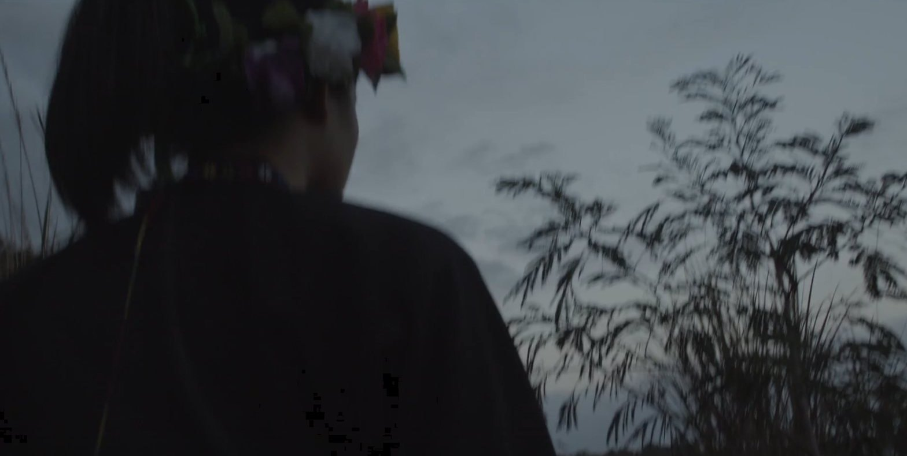
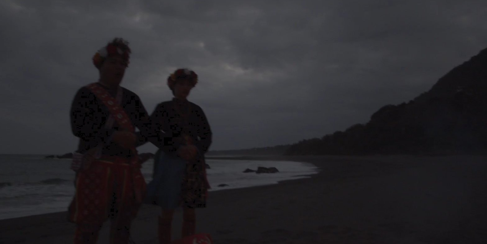
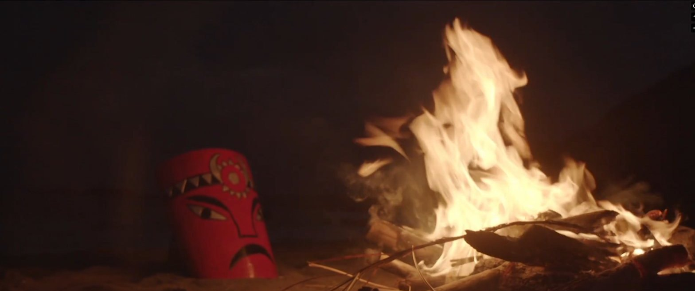

Synopsis劇情簡介
Li Yan meets two women. One is the question she has always carried about who she is; the other is its answer.
李燕遇見了兩個人，她們是李燕對自我身分的疑問與解答。
Taitung County Government Film Production Grant · 台東縣政府拍攝補助
← All films回到所有電影

